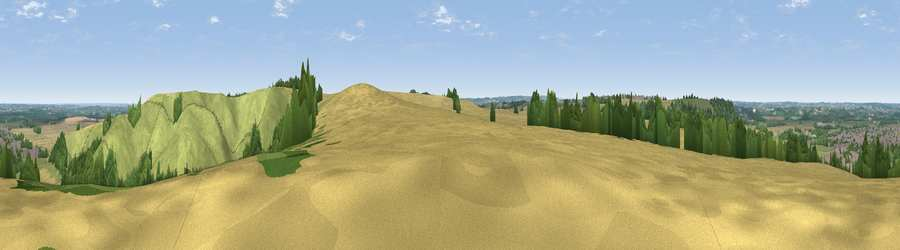

Viewpoint near Barton-le-Clay
#19261 in England · top 14% of its area beats it · near Barton-le-Clay · footpathWhere it is
The exact computed spot (TL 08525 29575). Click the marker for map links.
Public access: a public right of way passes within 31 m of this spot. Computed from Natural England's CRoW access layer and OpenStreetMap rights of way — not the legal definitive map. Always verify locally.
The view, rendered

A 360° render of this exact spot computed from the terrain model, tree cover and land cover — summer colours, afternoon light, calibrated against photographs of famous viewpoints. Real trees, hedges and buildings will differ in detail.
The panorama
Grey silhouette: terrain skyline in each direction (720 bearings, Earth curvature and refraction included). Dashed green: skyline with trees (+15 m) and buildings (+8 m) as obstacles. Blue strip: how far the ground is visible on each bearing.
Where the view opens
Wedge length = distance to the farthest visible ground on that bearing (vegetation-aware). Rings at 10, 25 and 50 km.
What fills the view
41% grassland · 34% cropland · 22% woodland · 2% built-up
Angular shares of the visible panorama (visual magnitude), not map area. Landscape diversity 0.50 (0–1 Shannon).
Key numbers
More beautiful places nearby
The staircase of upgrades: each row has a higher view potential than everything closer. Driving times are estimates from straight-line distance, calibrated against real road routing — check an actual route before setting out.
| Place | Direction | Drive | Score |
|---|---|---|---|
| Viewpoint near Hexton | ENE · 1 km | ~2 min | 64.2 |
| Viewpoint near Hexton | E · 4 km | ~9 min | 65.4 |
| Beacon Hill | SW · 18 km | ~31 min | 74.1 |
| Viewpoint near Halton | SW · 28 km | ~44 min | 74.3 |
| Coombe Hill Monument | SW · 33 km | ~51 min | 75.5 |
| Viewpoint near Woolstone | WSW · 90 km | ~114 min | 76.7 |
| Viewpoint near Meon Vale | W · 92 km | ~117 min | 77.0 |
| Broadway Hill | W · 97 km | ~122 min | 77.7 |
51.95409, -0.42219 · source: screening · position refined by local search. Computed location — check access rights before visiting.